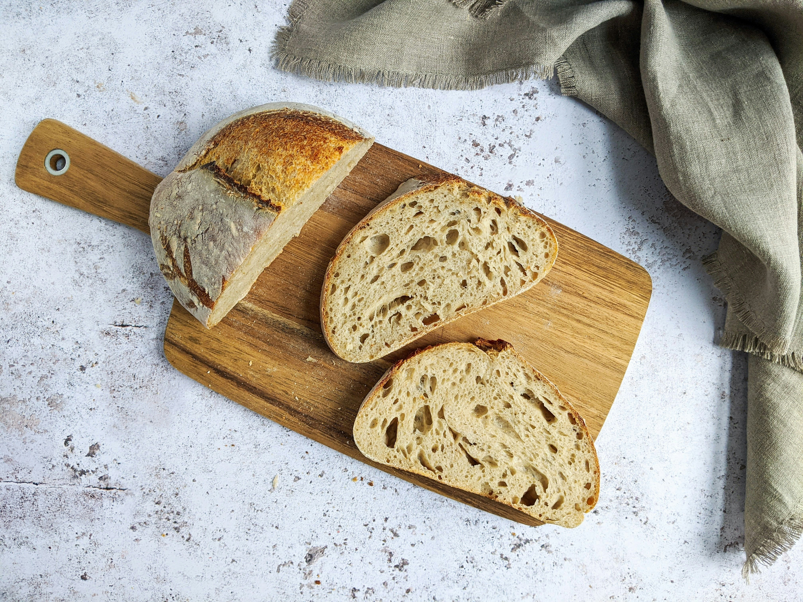
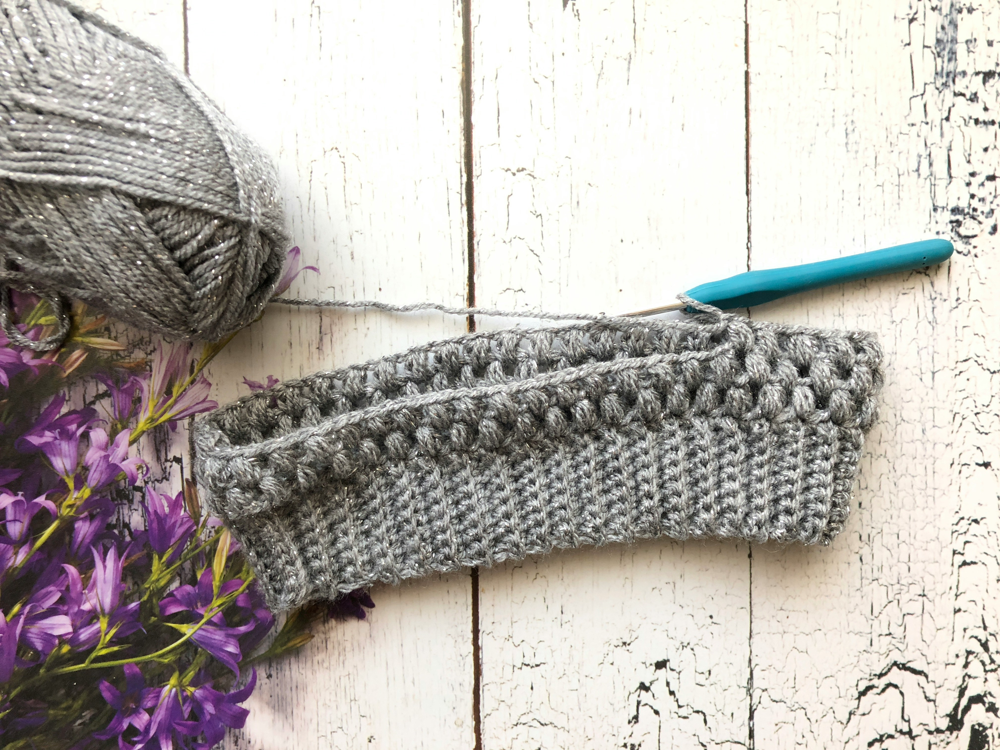

Vivian Barclay
Vivian's favorite chocolate chip cookie recipe: easygayoven -
Best-Ever Chocolate Chip Cookies

Vivian's favorite sourdough recipe: Aledandra's Kitchen -
Homemade Sourdough Bread, Step by Step

Fun crochet ideas on Pinterest